NFM/AM-Filtermodifikation beim Yupiteru MVT-7000
Adrian Böhlen
Version 1.0 vom 17.07.2026
Inhalt
- Einleitung
- Signalverlauf im ZF-Bereich
- Vorgesehene Modifikation
- Umsetzung
- Abgleich
- Weitere Modifikationen
- Ergebnisse
- Grundlagen und Literatur
Einleitung
Ein typisches Merkmal der meisten portablen Funkscanner (auch Handscanner genannt) ist die Nutzung einer identischen Bandbreite für Schmalband-FM (NFM) und AM, die bei 12 – 15 kHz liegt. Sprechfunk in NFM lässt sich damit am besten wiedergeben und auch für den Empfang des Flugfunks in AM ist diese Bandbreite ideal, weil die effektiven Frequenzen oft auf «krummen» Werten liegen, die von einem 5- oder 12.5 kHz Raster nicht genau getroffen werden. Problematisch wird es jedoch, wenn das Gerät auch den Kurzwellenbereich empfängt, wo 15 kHz dann gleich drei Kanälen entspricht, was bedeutet, dass nur stark einfallende oder freistehende Sender überhaupt gehört werden können. Dies trifft auch bei verschiedenen stationären Empfängern zu und ist entsprechend ein häufiger Kritikpunkt in Testberichten. . Nun ist ein Funkscanner zwar kein Weltempfänger, aber als Nutzer eines solchen Gerätes möchte man die Kurzwelle ja vielleicht trotzdem gelegentlich nutzen, ohne sich gleich einen separaten Weltempfänger anzuschaffen, auch wenn dies teilweise empfohlen wird. Es stellt sich daher die Frage, ob und wie eine Verbesserung möglich ist.
Am Naheliegensten erscheint es da, einfach das entsprechende Filter durch ein baugleiches mit schmalerer Bandbreite zu ersetzen. Leider ist das in diesem Fall aber keine gute Idee, weil dadurch auch NFM beeinflusst würde. Und dort ist bei zu schmaler Bandbreite kein verständlicher Empfang mehr möglich. Es ist daher nötig, die beiden Zweige zu trennen und separat zu filtern, was die Sache recht kompliziert macht.
Das Gerät meiner Wahl ist der Yupiteru MVT-7000, welches bezüglich Bandbreiten mit vergleichbaren Geräten identisch ist. Als Funkscanner mit durchgehendem Frequenzbereich verfügt er darüber hinaus über den Modus Breitband-FM (WFM), wofür ein sehr breites Keramikfilter eingebaut ist, welches ich durch einen schmaleren Typen ersetzt habe. Der Umbaubericht ist hier nachzulesen.
Signalverlauf im ZF-Bereich
In den Modi NFM und AM ist der Empfänger als Dreifachsuper geschaltet, wobei die erste Zwischenfrequenz (ZF; je nach eingestellter Frequenz auf 227.4 oder 592.2 MHz) lediglich der Unterdrückung von Spiegelfrequenzen dient. Es folgt die Mischung auf die zweite Zwischenfrequenz von 45 MHz, wo das Signal mit dem Quarzfilter 45K24A1 auf eine durchaus ungewöhnliche Bandbreite von 24 kHz begrenzt wird. Der weit verbreitete Motorola-Baustein MC3361D dient schliesslich der Erzeugung der finalen Zwischenfrequenz von 455 kHz, die mit dem Keramikfilter LF-B15 auf 15 kHz Bandbreite reduziert wird. Für die NFM-Demodulation gelangt das Signal anschliessend abermals in den MC3361D, während die AM-Demodulation im SONY-Baustein CX20111 erfolgt, der auch die WFM-Verarbeitung auf der 10.7 MHz Ebene übernimmt. Diese Details sind dem verfügbaren Schaltplan zu entnehmen, auch wenn dessen Auflösung sehr niedrig ist.
Vorgesehene Modifikation
Da ich keine entsprechende Anleitung verfügbar habe, bleibt mir nichts anderes übrig, als nach dem Prinzip «Trial and Error» an die Sache heranzugehen. Abb. 1 zeigt den fraglichen Ausschnitt des erwähnten Schaltplans und Abb. 2 meine modifizierte Variante, die mir am aussichtsreichsten schien. Die an Pin 3 ausgekoppelte Zwischenfrequenz wird dabei über einen simplen Kondensator bei Pin 5 direkt wieder in den MC3361D eingespeist. Auf diese Weise findet für NFM in der ZF 455 kHz überhaupt keine Filterung mehr statt und die von der vorherigen ZF übernommene Bandbreite von 24 kHz bleibt erhalten. Der Hintergrund dieser Überlegung ist, dass ich NFM primär zum Fernempfang im UKW-Bereich, sowie zum Tonsignal-Empfang des Videorecorders nutzen möchte, während normaler Sprechfunk-Empfang in FM für mich kaum eine Rolle spielt. Natürlich wäre eine zusätzliche Filterung, z.B. mit einem 30 kHz breiten CFU455B die bessere Lösung, allerdings ist zu berücksichtigen, dass die Platzverhältnisse im Innern dieses Empfängers äusserst eng sind und es fast unmöglich ist, noch ein zusätzliches Filter unterzubringen.
Für AM soll das Signal vom Pin 3 durch ein schmales Keramikfilter geleitet und danach direkt in den Transistor Q20 eingespeist werden, der vermutlich als Impedanzwandler figuriert und das Signal über den Emitter zum CX20111 weiterleitet. Der im Schaltplan als C99 bezeichnete Kondensator ist in dieser Konstellation nicht mehr notwendig.
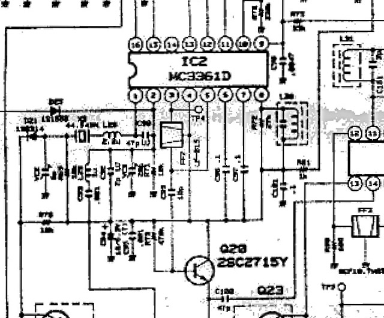
Abb. 1: Auszug aus dem Schaltplan in originaler Auflösung im Bereich des ZF-IC Motorola MC3361D.
Download von https://www.rigpix.com/ vom 26.10.2024
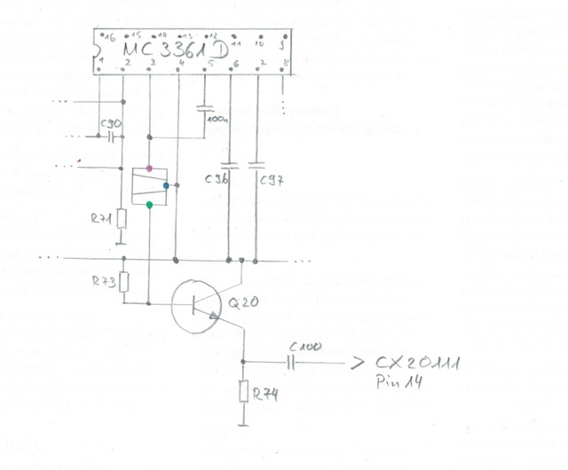
Abb. 2: Skizze mit dem modifizierten Signalverlauf NFM/AM im Bereich des ZF-IC Motorola MC3361D.
Eigene Skizze vom 15.02.2026
Umsetzung
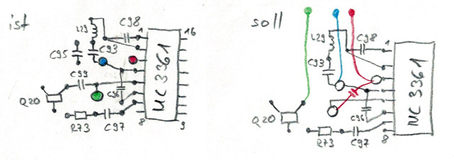
Abb. 3: Skizze des Platinenlayouts mit der vorgesehenen Modifikation.
Eigene Skizze vom 29.05.2025
Wie das Gerät zerlegt wird, habe ich im Umbaubericht der WFM-Bandbreite beschrieben, weshalb ich darauf nicht weiter eingehe. Alle Arbeiten erfolgen auf der hinteren Platine, welche die HF-Elektronik beherbergt. Hier geht es zunächst mal darum, mich auf dem äusserst engen Layout auf der Platinenrückseite zurecht zu finden, weshalb ich den ist-Zustand skizziere und im Anschluss den gewünschten Zustand (gemäss Schaltplan, Abb. 2) im gleichen Stil zu Papier bringe. Wie immer bei solchen Aktionen werde ich mit verschiedenen Farben isolierte Drähte verwenden, um Verwechslungen auszuschliessen. Die Leitung zum Filtereingang wird rot, jene zum Ausgang grün und die Masseleitung (die in diesem Fall gar nicht auf Masse liegt, aber dazu später) blau/violett sein. Die grösste Herausforderung wird – wie immer bei diesem Gerät – darin bestehen, dass alles enorm klein ist. Der auf der Skizze (Abb. 3) gezeigte Ausschnitt der Platine misst in Realität gerade mal 10 × 10 mm!
Als erster Schritt muss das graue Keramikfilter des japanischen Herstellers NKT entfernt werden. Dies hat dieselben Dimensionen wie jene des bekannteren Herstellers muRata, die normalerweise ein schwarzes oder gelbes Gehäuse aufweisen.
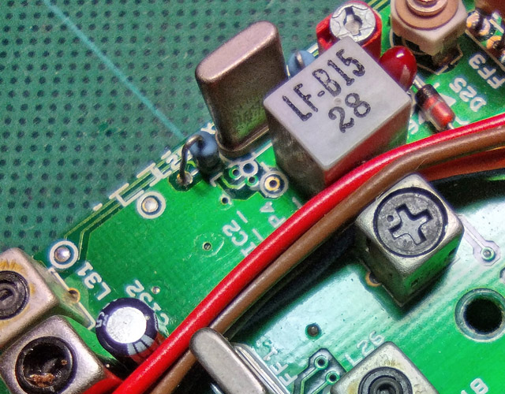
Abb. 4: Originales Keramikfilter für NFM/AM mit der Bezeichnung LF-B15 auf der Oberseite der Platine. Links daneben der Quarz für die Umsetzung der zweiten ZF von 45 MHz auf die dritte ZF von 455 kHz.
Eigene Aufnahme vom 11.02.2026
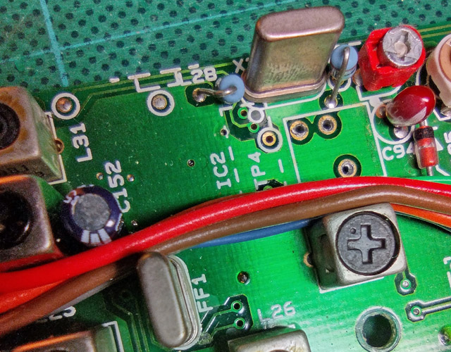
Abb. 5: Das Keramikfilter ist entfernt und die drei Löcher sind gereinigt. An der Position FF1 ist ausserdem das im Text erwähnte 24 kHz breite Quarzfilter der ZF 45 MHz zu erkennen.
Eigene Aufnahme vom 11.02.2026
Das Entfernen dieses Filters mit dem Lötkolben ist leider sehr schwierig und erfordert eine ruhige Hand. Zunächst müssen die drei Anschlüsse so gut wie möglich mit Lötsauglitze vom Lötzinn befreit werden, wobei der Lötkolben jeweils nur kurz an die entsprechenden Stellen gehalten werden darf, weil sonst die benachbarten, wenige Millimeter entfernten Halbleiterbauteile (Motorola-IC und Transistor) durch die Hitze beschädigt werden können. Ist dies geschafft, muss mit Hilfe des Lötkolbens auf der einen und durch vorsichtiges Ziehen auf der anderen Seite das Filter herausgezogen werden. Man fühlt sich bei dieser Arbeit ein wenig wie eine Mischung aus Zahnarzt und Uhrmacher! Zu guter Letzt müssen die drei Löcher gut gereinigt werden, wofür sich eine Stecknadel eignet. Ebenso muss der Kondensator C99 zwischen Filterausgang und Transistor entfernt werden. Die Abbildungen 4 bis 7 zeigen die einzelnen Schritte.
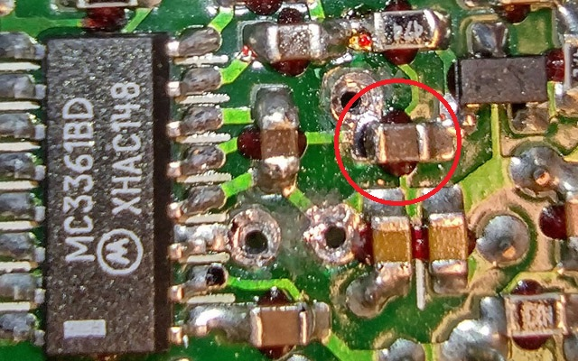
Abb. 6: Unterseite der Platine mit dem Motorola-Baustein MC3361BD. Rechts davon die drei Löcher, in denen das Keramikfilter eingelötet war. Rot umkreist der Kondensator C99. Rechts davon der Transistor Q20 (beschriftet mit RY).
Eigene Aufnahme vom 11.02.2026
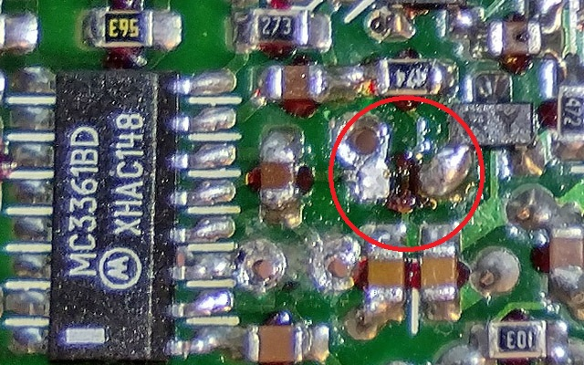
Abb. 7: Gleiche Situation wie zuvor mit entferntem Kondensator C99.
Eigene Aufnahme vom 11.02.2026
Für den NFM-Zweig werde ich wie erwähnt auf eine Filterung verzichten und überbrücke daher diesen Teil mit einem 100 nF-Kondensator. Der verwendete Typ von Siemens (erkennbar an der Aufschrift «100nS», siehe Abb. 12) gilt als ideal für Hochfrequenzanwendungen. Schwieriger ist die Frage zu beantworten, welches Filter ich nun für AM verwenden soll. Entscheidend ist zunächst mal, was in der Bastelkiste liegt, wobei ich für diese meist Jahrzehnte alten Teile unterschiedlicher Herkunft leider keine Dokumentation verfügbar habe, und das Aufstöbern der technischen Daten online nicht mehr bei allen Typen gelingt. Nach einiger Überlegung habe ich mich für das SFR455J entschieden, welches eine Durchlassbandbreite von 4 kHz aufweist und der grösseren Bauform angehört, d.h. jene mit mehr Keramik-Resonatoren, was gleichbedeutend mit besserer Filterwirkung sein sollte. Allerdings muss ich dieses recht grosse Bauteil verkehrt herum auf der Platine festkleben und die Anschlüsse über entsprechende Drähte herstellen, die wie erwähnt verschiedene Farben aufweisen. Wie aus dem Schaltplan (Abb. 1) hervorgeht, ist der mittlere Anschluss, der normalerweise auf Masse liegt, hier mit der Plusleitung verbunden (Pin 4 beim MC3361BD) . Das scheint so offenbar auch zu funktionieren, daher werde ich das nicht ändern. Jedoch entscheide ich mich dafür, die Leitungen zum Ein- und Ausgang mit 0.2 mm dünnem Lackdraht zu umwickeln, um sie möglichst gut abzuschirmen. Diese Drähte verbinde ich später jedoch mit der «echten» Masse, d.h. dem Minuspol der Schaltung.
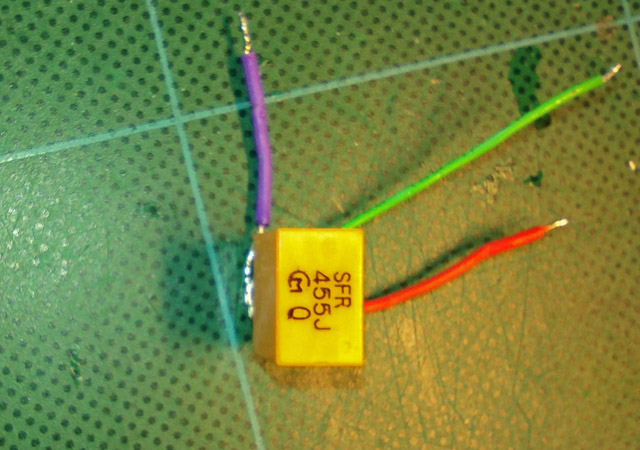
Abb. 8: muRata Keramikfilter SFR455J mit den drei Anschlüssen für Eingang (rot), Ausgang (grün) und «Masse» (violett)
Eigene Aufnahme vom 11.02.2026
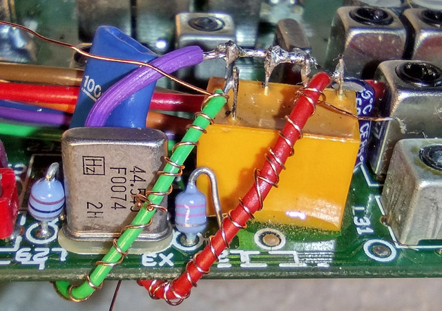
Abb. 9: Keramikfilter SFR455J eingebaut. Die Ein- und Ausgangsleitung sind mit dünnen Lackdrähten umwickelt, die später mit Masse verbunden werden.
Eigene Aufnahme vom 14.05.2026
Mit diesen Änderungen ist der Umbau grundsätzlich abgeschlossen und das Gerät wieder funktionsbereit. Wie im Hauptbericht erläutert, ist aufgrund der Konstruktion ein Betrieb in offenem Zustand nicht möglich. Das ist ein erheblicher Nachteil, da die geänderte Parametrisierung der Bandbreite einen Neuabgleich erfordert. Aus diesem Grund habe ich bereits zu einem früheren Zeitpunkt das defekt übernommene Gerät (Nr. 21101713) ausgeschlachtet und dabei auch die 16-polige Stift- und Buchsenleiste freigelegt. Mit 16 Verbindungskabeln ausgestattet habe ich so nun die Möglichkeit, die beiden Platinen auf dem Arbeitstisch miteinander zu verbinden. Es fehlt bloss noch eine Stromversorgung und diese liefert das stabilisierte Netzteil Profitec IC1200 aus den 90er Jahren, welches die erforderlichen 12V abgibt. So verdrahtet, mit der eingeschobenen Teleskopantenne auf- und Kopfhörer eingesteckt, schalte ich das Gerät ein, worauf unverzüglich die gewohnte Anzeige im Display erscheint und im Kopfhörer auf 97.9 MHz SWR Kultur erklingt (bei eingeschobener Teleskopantenne im Schweizer Mittelland!). Möge der Abgleich beginnen (Abb. 11).
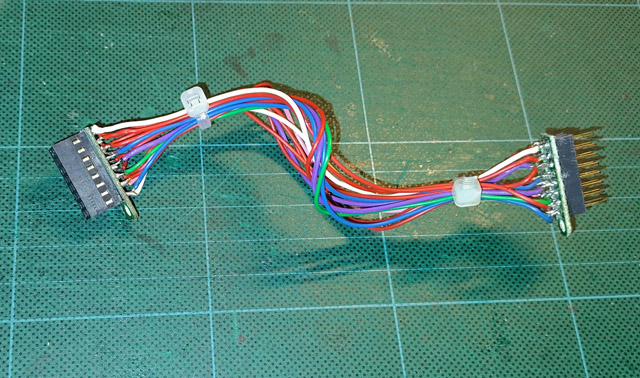
Abb. 10: Aus dem ausgeschlachteten, defekten Gerät ausgebaute 16-polige Stift- und Buchsenleiste. Die beiden Teile sind mit 16 Drähten miteinander verbunden und ermöglichen, die beiden Platinen auch in geöffnetem Zustand zu verbinden.
Eigene Aufnahme vom 10.02.2026
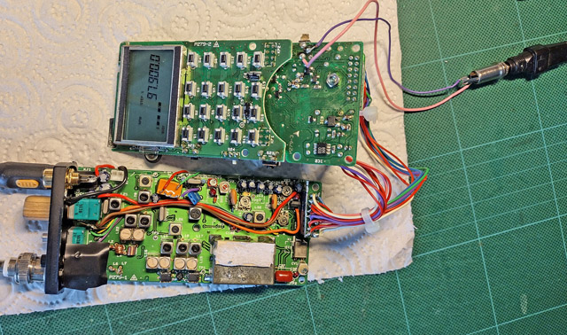
Abb. 11: Mit dem 16fachen Verbindungskabel und der Stromversorgung über ein externes Netzteil (Profitec IC1200) lässt sich der Empfänger offen betreiben und abgleichen.
Eigene Aufnahme vom 14.05.2026
Abgleich
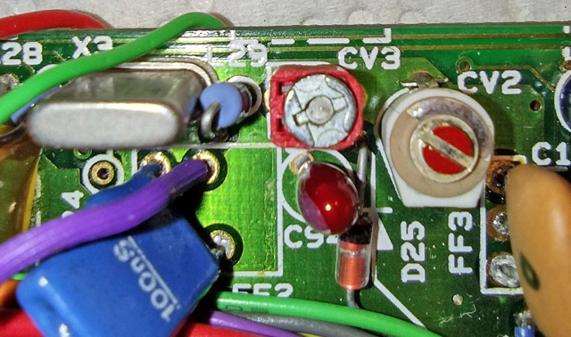
Abb. 12: Mit dem Trimmkondensator CV3 lässt sich das Gerät so einstellen, dass die angezeigte Frequenz mit der empfangenen genau übereinstimmt. Links unten der 100 nF Kondensator, der das FM-Signal zurück ins Motorola-IC einspeist.
Eigene Aufnahme vom 14.05.2026
Wie bereits erläutert, ist die Auflösung des verfügbaren Schaltplans viel zu schlecht, um die Bezeichnungen und Parameter der Bauelemente erkennen zu können. Daher habe ich keine Ahnung, welches der zahlreichen einstellbaren Bauteile (Trimmkondensatoren und Spulen mit Kern) welche Aufgabe wahrnimmt. Somit bleibt wiederum nur das Prinzip «Trial and Error» übrig. Konkret bedeutet das, bei eingestellter Betriebsart AM einen Sender einzustellen, von dem sicher ist, dass die Frequenz sauber ins 5 kHz Raster passt. Gerade bei den Flugfunkfrequenzen ist dies leider meist nicht der Fall, da die publizierte Frequenzen in der Regel nicht genau mit den im 8.33 kHz Raster angesiedelten Frequenzen übereinstimmt. Daher ist ein gut zu empfangener Kurzwellensender hierfür die bessere Wahl. Und da zeigt sich bereits, dass der Empfänger aktuell nicht korrekt eingestellt ist, was natürlich mit dem originalen 15 kHz breiten Filter nicht auffällt. Der entscheidende Regler, um dies zu korrigieren, ist aber rasch gefunden: Es ist der mit CV3 gekennzeichnete Trimmkondensator, direkt neben der Stelle, wo früher das 15 kHz Filter eingelötet war. Abb. 12 zeigt die korrekte Einstellung. Im Vergleich zum ursprünglichen Zustand (z.B. in Abb. 5 zu erkennen) ist der Unterschied augenfällig.
Weitere Modifikationen
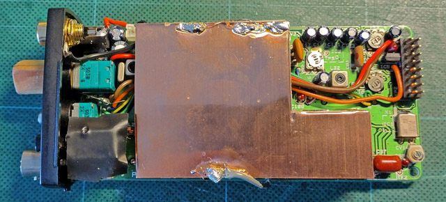
Abb. 13: Mit Masse verbundenes Abschirmblech auf der Oberseite der HF-Platine.
Eigene Aufnahme vom 14.05.2026
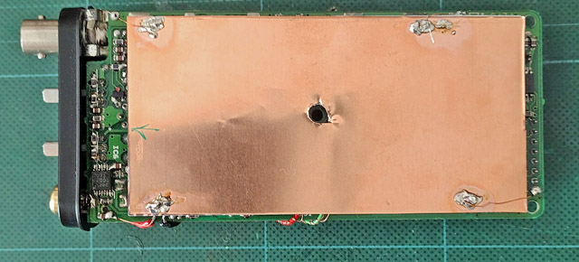
Abb. 14: Mit Masse verbundenes Abschirmblech auf der Rückseite der HF-Platine.
Eigene Aufnahme vom 23.05.2026
Betrachtet man den inneren Aufbau des MVT-7000 fällt auf, dass nur eine einzige Baugruppe (vermutlich der erste Mischer) mit einem Abschirmblech geschützt ist. Diesbezüglich schneidet selbst mein anderer Funkscanner, der kleinere und wesentlich weniger leistungsfähige Uniden BC92XLT, deutlich besser ab. Ich entscheide mich daher, die Abschirmung selbst noch ein wenig zu verbessern, da ich sowieso Massepunkte für die abgeschirmten Leitungen des Filters benötige. Ein dünnes Kupferblech, aufgeklebt auf ein Stück Karton ist zu diesem Zweck bestens geeignet. Die ganze Konstruktion klebe ich auf die abgeschirmte Baugruppe wobei ein starker Draht für die Masseverbindung sorgt. Auf der gegenüberliegenden Seite lassen sich die dünnen Drähte der abgeschirmten Leitungen gut festlöten. Etwas später füge ich auch auf der Rückseite ein solches Blech ein, welches ich über insgesamt 4 Drähte mit den nächst gelegenen Massekontakten verbinde. Inwieweit dies den Empfang tatsächlich verbessert, ist natürlich schwierig zu sagen, aber bei einem Gerät, welches standardmässig mit einem Mono-Teleskopstab betrieben wird, ist eine grosse Massefläche als Gegengewicht auf jeden Fall sinnvoll.
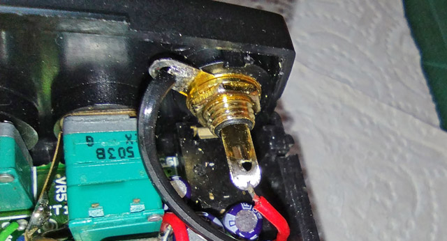
Abb. 15: Cinch-Buchse anstelle des vormaligen Abstimmknopfs (rotary encoder)
Eigene Aufnahme vom 11.02.2026
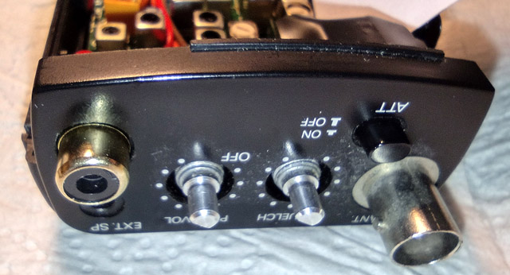
Abb. 16: Cinch-Buchse zum Anschluss für ein externes Aufnahmegerät.
Eigene Aufnahme vom 11.02.2026
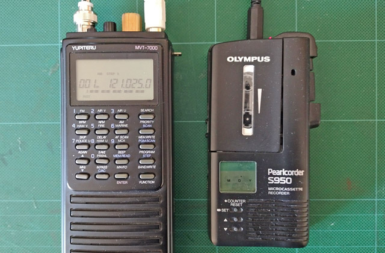
Abb. 17: Angeschlossenes Aufnahmegerät Olympus Pearlcorder S950, während einer Aufnahme der Tower-Frequenz des Flughafens Bern-Belp BRN.
Eigene Aufnahme vom 17.05.2026
Der rastende Drehknopf «für die Abstimmung wie bei einem halbwegs normalen Radio», wie sich Nils Schiffhauer einst ausgedrückt hat , scheint leider ein Sorgenkind bei diesem Empfänger zu sein. Bei zwei von drei erworbenen Geräten funktionierte er nicht mehr. Ausserdem macht er das Zerlegen und Zusammenbauen noch komplizierter als es eh schon ist. Weil ich darauf eigentlich gut verzichten kann (auch portable Weltempfänger haben meist nur eine Tipptasten-Abstimmung), habe ich ihn entfernt und das Loch für den Einbau einer von der Grösse her perfekt passenden Cinch-Buchse genutzt. Dort lässt sich dann mit einem passenden Verbindungskabel das Aufnahmegerät Olympus Pearlcorder S950 anschliessen. Details zu dieser Methode sind im Bericht zum Tonaufnahme-Anschluss beim Panasonic RF-B45 nachzulesen. Ergänzend ist zu sagen, dass beim MVT-7000 die Rauschsperre zur Steuerung der Aufnahme genutzt werden kann, wenn der Schiebeschalter bei der Aufnahme auf VCVA gestellt wird. Damit die Aufnahme nicht übersteuert, darf der Lautstärkeregler nur ganz wenig aufgedreht werden.
Ergebnisse
Der Modus NFM ist nach dieser Modifikation für das UKW-Rundfunk-DX überhaupt erst richtig brauchbar geworden. Gegenüber der originalen Bandbreite ist der Unterschied wie Tag und Nacht. Empfangene Sender kommen natürlich nicht verzerrungsfrei, sind aber problemlos verständlich, was mit 15 kHz meist nicht der Fall war. Trotz der fast doppelt so hohen Bandbreite ist die Empfindlichkeit weiterhin sehr gut, was vor allem auf hohen Frequenzen auffällt. Das im Hautbericht beschriebene Empfangen des Videokanals gelingt nun auch in benachbarten Räumen und ist dank des geringen Modulationshubs aufgezeichneter Videosendungen sogar meist verzerrungsfrei.
Die Filterung mit nur noch einem einzigen einpoligen Quarzfilter hat natürlich auch einen erheblichen Nachteil: Die Nachbarkanaldämpfung ist ziemlich schlecht, was sich dadurch äussert, dass stark einfallende UKW-Rundfunksender auch 100 kHz höher oder tiefer noch bemerkbar sind.
In AM auf Kurzwelle ist die Trennschärfe nun fast so gut wie mit einem der gängigen portablen Weltempfänger, die über Filter derselben Gattung verfügen. Da hier aber nur ein einziges solches Filter verbaut ist, lassen sich sehr stark einfallende Signale auf den Nachbarkanälen noch erkennen, wenn auch nur gedämpft. Bei einem abendlichen Vergleichstest mit dem Panasonic RF-B45 fällt auf, dass alle dort empfangenen Sender auch mit dem modifizierten MVT-7000 gehört werden können, trotz der auf Kurzwelle völlig fehlangepassten Teleskopantenne. Auf den tieferen Bändern (49 und 41 m) ist die Empfangsqualität allerdings deutlich schlechter, trotzdem ist das ein respektables Ergebnis, wenn man bedenkt, dass der Empfangsbereich des MVT-7000 erst ab 8 MHz überhaupt spezifiziert ist. Je höher der Frequenzbereich, desto geringer werden die Unterschiede und sind z.B. abends auf 21 m nur noch wenig ausgeprägt. Auch wenn der Kurzwellenbereich längst nicht mehr so dicht belegt ist, wie noch vor ein paar Jahrzehnten, so findet sich doch noch die eine oder andere Konstellation mit zwei Sendern im Abstand von nur 5 kHz, die nun ordentlich getrennt werden können.
Theoretisch müsste sich eine engere Bandbreite auch durch eine höhere Empfindlichkeit, bzw. geringeres Rauschen äussern, was ich jedoch nicht eindeutig feststellen kann. Beispielsweise ist das an meinem QTH schon zuvor knapp an der Verständlichkeitsgrenze liegende Signal von Meiringen INFO auf 135.475 MHz mehr oder weniger unverändert zu empfangen.
Dass sich durch das 8.33 kHz Raster im Flugfunkbereich «krumme» Frequenzen ergeben, die mit der 5 kHz-Einstellung gar nicht exakt getroffen werden können, wurde bereits erwähnt. Neu ist hingegen die Feststellung, dass Flugplätze und Flugzeuge teilweise nicht genau auf derselben Frequenz senden. So wird beispielsweise für Bern Arrival/Departure (APP) in der ICAO-Karte die Frequenz 127.325 MHz genannt , allerdings muss für den sauberen Empfang des Flughafens 127.320 eingestellt werden, während die Flugzeuge auf 127.325 MHz besser zu hören sind. Die reale Frequenz wäre in diesem Fall 127.32487 MHz. Für das gemütliche Mitverfolgen des Funkverkehrs ist das natürlich unpraktisch.
Wie anhand der Daten von Skizzen und Bildern ersichtlich ist, hat sich dieses Projekt von den ersten Plänen bis zum Abschluss über ein volles Jahr hingezogen, wobei die intensiven Phasen im Februar und Mai 2026 lagen. Dazu gehörte auch die Reinigung der Tastatur und der Ersatz der vorderen Platine mit jener aus einem anderen Gerät (mit intakten Kondensatoren). Trotz der erwähnten Nachteile, die solch eine Modifikation halt auch mit sich bringt, hat sich der hohe Aufwand gelohnt, denn zum einen arbeitet das Gerät nun wieder störungsfrei und zum andern sind die Empfangsleistungen in jenen Bereichen, die mir wichtig sind, deutlich besser geworden.